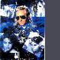
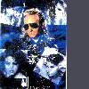

When Meat Loaf and his collaborator, Jim Steinman, needed a female singer for their band in 1976, they brought in Ellen Foley, whom they'd met a year earlier when all three were part of the touring company of the National Lampoon Show. Steinman had an idea for an album, which would mix music and theatrics, and Ellen joined the two in their search for a record deal. Said Steinman: "I think it was turned down by 18 record companies and 10 to 12 producers. We didn't have a demo tape, we just had me at the piano and Meat and Ellen Foley singing. No one could deal with it, they couldn't figure out what it would sound like when it was finished. We'd do "Paradise By The Dashboard Light" in this little office, with Ellen Foley and Meat Loaf French kissing and slapping each other around! We tried to get Clive Davies, Bob Ezrin, Glyn Johns, George Martin.... Finally we got Todd Rundgren, who was great. He even put up some of his own money." Little did they know that almost 20 years later the album which became "Bat Out Of Hell" would stand at the 25 million mark world-wide, and still sell roughly 45,000 copies every week....."

Born and raised in St. Louis, Ellen left school (Webster College) and moved to New York in 1973 "to study acting for a summer. I guess I believed that myself." At nights she would sing in her boyfriend's rock band. She also pursued an acting career and soon found herself working in off-Broadway and Public Theatre productions. Said Ellen: "I started studying at H.B. Studios in Greenwich Village and found a great acting teacher, Alice Spivak, still my mentor. I started going to cattle-call auditions where literally hundreds of people were vying for one role. I first got non-paying work off-off Broadway in "new" plays such as "Sophia Equals Wisdom Part 2" and "Charlie Chestnut Rides The I.R.T". My first paying job was singing in Catskill Mountain hotels - a resort area - in a very straight musical comedy revue. I was fired, I was too odd, thank God!". Somewhat disillusioned with her situation, Ellen took another route; rock 'n' roll. She found a rock band called "Big Jive", based in Atlantic City, and joined them for 6 months as lead vocalist. Their material consisted of originals, Top 40 songs and Bessie Smith tunes. Said Ellen: "I sang Frank Sinatra's "That's Life" which was interesting to me (and a predecessor to Sid's "My Way", by the way). We made demos, got nowhere and we disbanded. When that ended I was back in New York, going to school, and auditioning for theatre. I was a token female in a comedy called "Boy Meets Boy", and waited tables."
In 1975 Ellen got a part in the touring company of "The National Lampoon Show", "completely tasteless, sacrilegious - and a lot of fun", Ellen later remembered. She met Meat Loaf and Jim Steinman who also were in the show. Said Ellen: "At this time Steinman was hatching "Bat Out Of Hell", and he wrote "Paradise By The Dashboard Light" for Meat and I. After the tour I collected unemployment and auditioned with Meat and Steinman for countless record execs and producers who looked at us and said; 'Huh?!" In the meantime, Ellen got involved in a show called "YMCA" in which she reportedly played a pregnant baboon, Patty Hearst, a cheerleader and a fairy! The television series "Three Girls Three" followed next, a variety show about the lives of three cabaret-style singers (which was an American attempt at "Rock Follies"). "One day I went to a general audition for a television show called "Three Girls Three", .... all singing, all dancing, all comedy. I was flown out to Los Angeles for a screen test, and got the job. They auditioned 300 people for the parts and chose three of us. Mimi Kennedy who I'd first met at National Lampoon Show also got a part," Ellen later said. Debbie Allen was the third girl on the set. Said Ellen: "It was an amazing jump from working for free. It was a four part mini series. I had my own song each week, attempted comedy, was made very blonde and wore fancy gowns. I worked with such people as Bob Hope and Steve Martin. But I was glad it was all over. I was out of place." In retrospect, Ellen feels that the "television thing" was a crucial turning part in her career. "(Three Girls Three) was the ultimate fake situation, all Broadway, Vegas, Hollywood. I had to get back to reality," Ellen later explained, and added "At the time I had already started recording with Meat Loaf, and I spent half my time in the studio doing some heavy rock 'n' roll." Meat Loaf and Jim Steinman finally got a record deal with Steve Popovich, and snagged Todd Rundgren as a producer, Said Ellen: "So I was going from straight television to that world. Interesting. Back then I was like, Who am I, who is Meat Loaf, what is my motivation? I was awed that Todd Rundgren was producing, and that Meat Loaf was sitting in a chair and that I got to rant and rave at him. I just thought that it was fun. You know, it was amusing. Eight million records later...." Ellen didn't quite give up on television work, however. She was a summer (1977) replacement in a couple of soap operas, "Search For Tomorrow" (in which she played a deranged Nurse's Aide reject) and "One Life To Live" (a student radical). The Meat Loaf album was a very slow climber on the charts, it took almost a year to reach the top 10, so Ellen was free to pursue her acting career again. Since the Meat Loaf album was a quasi-mythic rock and roll saga originally orientated toward theatre, it was a natural transition. They were resurrecting "Hair" on Broadway in the fall of 1977 and Ellen played the lead role of Sheila. In the early months of 1978, Ellen appeared at the Kennedy Arts Centre in Washington, DC - in Jim Steinman's play, "Neverland", a rock 'n' roll Peter Pan. Ellen played the role of Wendy. Meanwhile, Ellen's performance in the Broadway revival of "Hair", led to a different role in the film version directed by Miles Foreman later in the year (and released in 1979). Foreman and choreographer Twyla Tharp allowed Foley considerable freedom in her rendition of "White Boys/Black Boys", one of the best-received sequences in the movie.
At this point the record people began taking an interest in Ellen because of her contribution to the Meat Loaf album which was climbing to the top of the charts world-wide. Meat Loaf wanted Ellen to tour with him, but Ellen was afraid she would just become another back-up singer who would only come out and do certain numbers. Steve Popovich had seen Ellen auditioning with Meat Loaf and he paid Ellen to do demos in early 1978. Said Ellen: "I did these demos and I just took a big risk and said 'No' to Meat Loaf, 'cause I really wanted to try and do an album by myself. And I was right; without too much stress and strain, I was signed to Epic. Then the working and waiting game of making records began." Her tapes found their way to Ian Hunter and Mick Ronson, and they were impressed. Interestingly, one song on the demo was a cover of Hunter's Mott The Hoople classic "All The Way From Memphis", "we're talking of maybe releasing it sometime," Ellen said in 1980 (but sadly it never was). Ellen spent two weeks with Mick Ronson and Ian Hunter in Woodstock in the summer of 1978 to see if they could work together. "We could," Ellen said, "and I spent that fall and winter looking for material and going a bit stir crazy as I recall. I met Fred Goodman at the end of that period and co-wrote "We Belong To The Night". Finally in March of 1979 we got into the studio and made the record." The album was recorded at Media Sound Studios in New York. Explained Ellen: "It used to be a church with a great curved ceiling. To me it made you feel like you have this sanctified project. It's really how I wanted to do the record, to be able to take a break and go out, walk about on the street a bit. I insisted on making the album here, rather than go to one of those studios out in the country. I couldn't imagine doing a record out in New Jersey or something like that."
The Hunter Ronson team was important in building the name of Ellen Foley and she acknowledged their talent. "I got on real well with Ian, he's a lot more verbal than Mick who doesn't say much, you can just watch him play and you learn everything you need from that. He doesn't have to say anything, you can just sense his motive by his playing," Ellen later recalled. The album was titled "NIGHTOUT", after a Philip Rambow song, and received rave reviews when it got released in August 1979. Ellen got her first taste of US and World-wide promotion, talking to press and radio. "Promotion work can be more exhausting than performing, but it was a wonderful time because I travelled to the UK, Europe and the Netherlands, where my album and first single ("We Belong To The Night") topped the charts. It was my first time out of America."
Hunter and Ronson were close to finish recording Hunter's "You're Never Alone With A Schizophrenic" album when they teamed up with Ellen (it was released in April 1979), and they invited her to add backing vocals to several tracks. Possibly Hunter's finest record, it also marked the start of Ellen Foley's successful career as backing vocalist. Over a period of three years (1979 - 1981) she would contribute back-up vocals to numerous albums and singles, including two more Hunter albums. Ellen met Eric Bloom at the Schizophrenic sessions, and was invited to sing on Blue Oyster Cult's "Mirrors" album, released later in the year.
Ellen desperately wanted to go out on tour, but she couldn't use the people on her album for her live band, because they'd all ended up in Ian Hunter's band. She agreed with Hunter to not schedule her own tour 'till after he had finished his six month US tour (June - November), and then use his band for her own tour. Ellen would often join Hunter on stage that summer, singing back-up and she did several TV shows as a guest with the Ian Hunter Band as well. The first week of November, Hunter recorded a live album, "Welcome To The Club" in Los Angeles. Ellen did not sing on the live tracks, but she duetted with Ian on one of the four new studio tracks which made up side 4 on the album. It was titled "We Gotta Get Out Of Here" and was soon lifted as the first single from the album. Hunter made a three-track live promotional video for "Welcome To The Club", in which Ellen played a big part, singing and dancing. Come December and Ellen wasted no time in bringing Hunter's band on the road, including a TV appearance on Don Kirschner's Rock Concert. Said Ellen: "Then I put a band together and did a club tour in the USA. The record had much success in parts of Europe and Australia so a European tour was planned for January 1980. It was postponed a bit due to the fact that I broke my arm on a motorcycle in the Californian desert. But I soon ignored that disability and had a great time playing in Paris, Holland, Belgium, Germany, Sweden and London. I returned to New York for two weeks and took off on a promotional tour of Australia and Japan. Not many people see these places and it was really thrilling."
Ellen also found time to assist Hunter and Ronson who was producing Iron City Houserockers in Media Sound Studios in January 1980. She contributed back-up vocals to their "Have A Good Time But Get Out Alive" album along with the rest of the Ian Hunter Band. Also in 1980 she sang on Hilly Michaels "Calling All Girls" album; Hilly of course, played drums on "NIGHTOUT" - and she did one song with "The Sorrows" on their "Teenage Heartbreak" album. Ellen also duetted with Ian Hunter ("We Gotta Get Out Of Here") on the "Friday's Show", a popular US TV show, in June.
Several dates on Ellen's 1980 European tour were filmed for television. The complete Paris gig was shown in France, Dutch television aired a couple of songs from her Amsterdam concert, BBC showed two songs from her London gig at "The Venue" and she filmed a special for the Kenny Everett show. In Germany Ellen performed with the full band on "Bios Bahnhof".
Ellen met Mick Jones from The Clash at "The Venue" in London a couple of days before her own gig. She checked out the venue (and competition - Pat Benatar played...) and so did Mick Jones. That chance meeting ended the "NIGHTOUT" saga. For the next two years, Ellen was romantically involved with Mick Jones, who was a founder member of "The Clash", and she would work with him on records and films for the best part of that period. Said Ellen: "He was there (at "The Venue"), so I started to talk to him. Then I had to go away, and he came to America just as I was leaving for Japan and Australia, so I didn't see him for about a month. I really liked him instantaneously. I saw a unique person from another country, someone with a whole new set of ideas, from the way he looked to the way he thought. The whole style that he had was really attractive to me." Mick Jones caused a radical change in Ellen's life. They spent a lot of time together, Ellen said: "I saw the real Jamaica, and spent a lot of time in England and was exposed to ideas and attitudes I'd never known. We decided to record an album together." They called the album "The Spirit Of St. Louis", and recording evolved round the same time of the final "Sandinista!" sessions (the new Clash album on which Ellen contributed both lead and back-up vocals), in the summer of 1980. "Sandinista!" was released in December 1980 (March 1981 in US), and it was followed by "Hitsville UK", a single with a duet vocal from Ellen and Mick. The same duet vocal were utilised on several tracks on Ellen's album, which Mick Jones produced in North London's Wessex Studios (which were under siege earlier that year from recordings which fostered the completed "Sandinista!", a Pearl Harbour album, several Mickey Dread cuts and Ellen's album. Clash personnel were involved in them all). "Spirit of St. Louis" credits as backing players all four members of "The Clash", as well as several of Ian Dury's Blockheads and Tymon Dogg. Dogg in fact also wrote three of the songs on the album, while Joe Strummer and Mick Jones collaborated on another half a dozen; Ellen only contributed one of her own songs, "Phases of Travel" - it was almost a Clash album, in everything but Ellen's singing and the fact that she was the featured artist. Said Ellen: "Mick and I had a few ideas for songs. We were in New York but wanted to do them in England. The record company, in their mistrust, said 'oh, you're gonna do demos?' We said, 'that's right', and came over and did a whole record. When we'd finished they needed a lot of convincing. They needed people to tell them it was great."
Ellen didn't forget her old friends however, and in the autumn of 1980 she met with Steve Popovich again, of Cleveland International. Ellen sang "The Time Is Now" for a Cleveland charity album called "Children Of The World". This exclusive album, and performance, a duet with veteran Jimmy Hall, never received wide distribution, despite its worthy cause, and is possibly the rarest of all "Foley albums". "The Time Is Now" was lifted as a single in Holland, and is possibly even rarer than the album.
While in the States, Ellen also joined Jim Steinman in the studio, who was recording a solo album. The album started out as a Meat Loaf album, but Meat had to quit early because his voice was bad. "Bad For Good" was an interesting album, that had Ellen singing back-up on several tracks. There were no "Paradise By The Dashboard Light", though. The album was released in February 1981.
"Spirit Of St. Louis" was released in March 1981. Unfortunately, the reaction was somewhat less enthusiastic compared to "NIGHTOUT". It would appear "Spirit Of St. Louis" was neither a commercial nor critical success, featuring for just two weeks near the foot of the British LP charts, and not even touching the US Top 200 LP chart. Mick Jones were not too worried though, because The Clash's "Sandinista!" package were crashing into the American LP charts at the same time, eventually spending nine weeks there with a highest position of 35. "It's a unique, sensitive, if not commercial record," Ellen said of "Spirit Of St. Louis" later. "To me it is closer to the heart, the emotions. I was trying to be more expressive, not just see how high I can sing for it's own sake. I've come to terms with life, trust more in myself. I'm closer to myself since I made the first record - I didn't try and just put it out." Explaining how the title came about, Ellen said: "The Spirit Of St. Louis is in me. It's the name of the plane in which Charles Lindbergh made the first transatlantic flight. So we draw a line from St. Louis to London on the globe - from where I was born to where I've come to rest at this point in time."
Another 1981 album in which Mick Jones and Ellen was involved, Ian Hunter's "Short Back 'N Sides", co-produced by Mick Ronson and Mick Jones, and with backing assistance from Mick Jones and his associates, certainly faired better commercially in America, although its showing in Britain was no better than Ellen's. Ellen did back-up vocals when Ian came to England to complete the album in the first months of 1981. Hunter had heard tapes of Ellen's album and invited Jones "to add noises" to his own album! In the spring of 1981 Ellen also sang back-up on a Mickey Dread album, "on the only love song I've ever heard Mikey do."
Also in 1981, Ellen appeared with the Clash in a new Martin Scorsese film starring Robert DeNiro. The film, "King Of Comedy" (not released until 1983), would also include roles for Mick Jones, Joe Strummer, Pearl Harbour and Kosmo Vinyl. "Martin Scorsese asked us to come and play punks, and hang out on the corner and harass Robert DeNiro and Sandra Bernhard. It got cut up, but it was fun drinking beer and harassing DeNiro. Who could ask for anything more?" Ellen later remembered.
Ellen did a European promotional tour in the spring, singing live in TV studios with pre-recorded backing. She wouldn't put together a band until the fall of 1981. She spent some time auditioning for a regular band, never having had a permanent line-up of musicians. "It was an exotic mixture of music and musicians. One member played keyboards, violin and accordion! I had a female keyboard player who is a great vocalist. We did a club tour and some opening dates for an E.L.O. stadium tour. E.L.O.'s audience were surprisingly attentive. We gave them a lot to look at and listen too," Ellen later explained. After the tour, Ellen got back together with The Clash who were recording an album entitled "Combat Rock" in London and Ellen contributed backing vocals to "Car Jamming" and "Over-powered By Funk". The album was released in May 1982.
Ellen was now ready to start working on her third solo album. She hadn't written many songs for "Spirit Of St. Louis" because said Ellen: "I had indeed more songs of my own, but they didn't fit in with the theme of that album. There are songs which I'd written shortly after the release of "NIGHTOUT", and they were very much in that mood." In January 1982, Ellen and her tour band, plus Tom Mandel on keyboards, were locked in a New York studio for four days - from January 5th. And they weren't allowed out until the demo-tape had been recorded for the new album. Incidentally, the "NIGHTOUT" producer Mick Ronson was back at the controls. Most songs on the demo tape were Foley originals dating back to 1979/80 which had been in her live set for some time. She also met legendary songwriter Ellie Greenwich around this time, with whom she started writing songs for the new album. Ellie Greenwich, of course, wrote hits for Ronettes, Crystals and Tina Turner back in the 60's. The demos were distributed to various producers, and Ellen was determined to get a full-time producer this time, not a musician-turned-producer or a boyfriend as in the past. Ellen eventually went for Vini Poncia, who'd produced Martha Reeves, Kiss, Scandal and Melissa Manchester as well as writing songs for Ringo Star and Leo Sayer. Plans were made to record the album in the summer and Ellen had her own ideas of how the new album should sound: "The production... more vocally orientated, and the music - dance-rhythm influenced."
In April Ellen landed a part in "Tootsie", a new Dustin Hoffman movie. She had been trying to get back into films for some time and although it was not a big role, Ellen was thrilled to be back on a film set. She played the Production Assistant (Jacqui) on the Soap Opera where Hoffman dressed as a woman. Ellen spent six weeks on the movie, and postponed recording her new album 'till October. During the filming, a crisis befell when Ellen lost her voice. Explained Ellen: "I contracted a cyst on my vocal chord. I couldn't speak for a month. But with pills and prayers, it's been cleared up. But it was a bad time for me. Sydney Pollack would just snap, snap, snap and make alternations in scenes - I sat around making sign language to everyone on the set. But it was really neat to watch Dustin Hoffman come in with an army coat on, and become transformed into this woman with a 36C."
Recording of Ellen's third album, "Another Breath", started September 27 at the Media Sound Studios in New York. It was planned for January 1983 release. Ellen wanted to call the album "Lefty", but CBS wouldn't work with that. Her next suggestion was "Ellen Foley", but CBS wanted the album to have a title, so Ellen simply picked one song off the album, and named the album after it. She used her 1981 live band for the sessions, but her guitarist and keyboard player left Ellen earlier in the year, and had to be replaced. She found Phil Grande, "an unknown great guitarist," who became a permanent member of Ellen's band. Finding a keyboard player was more difficult, so she called for Tom Mandel, who was with Dire Straits at the time. Mandel played on "NIGHTOUT" and Ellen's first tour, and did the January 1982 demos. After the sessions for "Another Breath" he went back on the road with "Dire Straits", so Ellen had to replace him for her live band. Another Breath was released in February 1983 to great critical acclaim, and it sold pretty good in some European countries where Ellen always had a strong fan base, but CBS/Epic didn't give it the promotion it should have, and it did nothing in the most important markets, England and USA. So what did Ellen think of "Another Breath"? "It's my best record. The best production, the best songs, best everything. It's worked out just the way I'd have liked it." Ellen co-wrote three songs for the album, "Spy In The House Of Love", "Read My Lips" and "Run For My Life". Some UK and Continental singles had the non-LP "Beat Of A Broken Heart" on the flip-side; this was written by Ellen and Fred Goodman back in 1979.
While recording "Another Breath", Ellen joined Meat Loaf and Todd Rundgren, Ian Hunter and Mick Ronson, Carly Simon and Sting and many others, at the Media Sound studios to sing on Lynn Goldsmith's "Will Powers - Dancing For Mental Health" album. Lynn Goldsmith is a well-known photographer who had this idea to record an album with musical friends, many of whom were photographers as well. A wild idea, and it worked! Ellen herself doesn't know what songs she sings on: "The sessions were very hectic, with everyone throwing ideas around, totally disorganised but fun. Maria Vidal also sang on the album". The album was released in the spring of 1983, to mixed reviews. Incidentally, Ellen's affair with Mick Jones had ended last summer.
A short TV-comedy called "Head Shots" dates from this period, reportedly only 9 minutes long, but the contents are not known. Ellen filmed a promotional video for "Boys In The Attic" in New York and London in March. The video was directed by David Mallet, who'd finished David Bowie's "Let's Dance" video shortly before. When the promotional video was completed, Ellen, accompanied by her then-manager Pat Gibbons, did a 18 day promotional tour of Europe, taking in England, France, Belgium, Holland, Germany, Norway and Denmark - talking to the press, radio, and appearing on television. She planned to do a European tour in June/July, but the tour got cancelled when Ellen jumped at a chance to work with actress Geraldine Page in a New York play that summer instead. She did however make a one-off, live appearance at a graduation ceremony in New York, in June, and sang two songs live on "Rock N Roll Tonite" (NBC) in July, backed by Garland Jeffries and his band. A US club tour with her regular band commenced throughout August/September (with new drummer Andy Kaufman). Work on an off-Broadway play called "Eve Is Innocent" followed shortly after. It ran for about a month, and Ellen, not forgetting her public, hoped to "hitch onto a big tour" in November/December, as opening act. As it turned out, she didn't - and her concert on September 9, 1983 in Cleveland turned out to be her last one.
1984 saw Ellen returning to session work. She contributed back-up vocals for Joe Jackson ("Body And Soul"), Dan Hartman ("I Can Dream About You") and Martin Briley ("Dangerous Moments"). Briley played bass on "NIGHTOUT" and did Ellen's first solo tour. Joe Jackson was another of Ellen's all-time favourites. She was offered to sing duet with Jackson, but generously gave the job to her friend Elaine Caswell, content with singing back-up herself. Ellen also teamed up with Jim Steinman that year, to sing and arrange backing vocals on "Holding Out For A Hero", a Steinman written and produced song for Bonnie Tyler which was included on the motion soundtrack album "Footloose". Interestingly, Ellen accepted an invitation around this time from Gary Holton (ex-Heavy Metal Kids) to join him in a band together with two Norwegian artists (Casino Steel and Claudia Scott) to record an album of rock n roll covers. Sadly, Gary Holton died before any sessions were started, and Ellen backed out of the project. Steel and Scott went along with the project though, replacing Ellen and Gary with Carlene Carter and Steve Payne, respectively. Ellen returned to television work instead, and in the autumn of 1984 she landed a role in the NBC sitcom "Night Court", replacing Paula Kelly in the role of Public Defender Billie Young. John Laroquette also starred in "Night Court" alongside Ellen. It was a popular show that gave Ellen many new fans, but she too was replaced; after only one season (1984/1985). In February '85 Ellen guested on "The Late Night Show With David Letterman", performing "Come And Get These Memories" live with Paul Shaffer's Band. Soon after she accepted an offer to guest in the PBS series "Ghostwriter", portraying a school principle, but this was only for a few episodes, apparently. She next ventured onto the New York cabaret circuit. Said Ellen at the time, also looking back at her career: "I liked acting, but I also very much wanted to be a part of the New York music scene. There was a real talented group of people in the late Seventies, like Ian Hunter, Mick Ronson, Debbie Harry, and David Johansen. It was a real exciting time. You knew you were involved with talented, creative people. There was a real camaraderie existing. A lot of the people took off and became famous, but a lot of those people who were in that crowd were musicians who aren't well known. Some of the artists were very creative and individualistic like David Johansen. His music was heartfelt. He was musical and he was a good performer. We all had to find new ways of expression because of the economics of the record industry. David put together Buster Pointdexter and I put together a cabaret act. This new act that I performed at Folk City was what I perceive as true cabaret. I don't think cabaret has to be that spry musical-comedy thing that you see in theatre bars. To me, cabaret is that pre-war German feeling of people like Brecht and Weill. That's what rock and roll was born from. It's dark, dramatic, sexual, and passionate. The Doors recorded it and it's what David Bowie is doing. It's the pure form. I'd love to do "Threepenny Opera." Jim Steinman called me the modern-day Marlene Dietrich.
In August 1986 Ellen starred in a musical called "Beehive" in Manhattan, and she also promoted this on TV. Throughout 1985-86-87 Ellen would often appear as a celebrity guest in New York TV-shows, discussing her parts in upcoming musicals or other projects. Her appearance at the "Regis Philbin" show in 1987 was probably the last time she sang live on TV. For the next few years Ellen would concentrate on her film career again. "Fatal Attraction" was first. This popular 1987 movie starred Michael Douglas, Glenn Close and Anne Archer. "Cocktail" followed in 1988 and saw Ellen teamed up with Tom Cruise, Bryan Brown and Elisabeth Shue. That year she also appeared in "Married To The Mob" alongside Michelle Pfeiffer, and she found time to do a musical called "Me And My Girl" (April 1988). Then Jim Steinman, always Ellen's biggest fan, called for her again. He was assembling a band for his next project "Pandora's Box", and he wanted to have Ellen as one of four featured female vocalists. The other three were Elaine Caswell (backing vocals on "Another Breath" six years earlier), Gina Taylor and Deliria Wilde. Steinman called the album "Original Sin", and Ellen was lead vocalist on two tracks, "Twentieth Century Fox" and "My Little Red Book"; she was sharing lead on "Original Sin", and she recited the "Want Ad" monologue. It was a brilliant album, with four fantastic vocalists, excellent songs and good musicianship. It was something Steinman had wanted to do for years; he was well pleased with it and wanted to bring the full band on tour with a theatrical rock show unlike anything the world had seen before. Sadly, it was not to be. Critics hated the album (released 1989), and despite a couple of interesting promotional videos (none of which featured Ellen), only faithful fans picked it up and the album sold poorly and Ellen once more returned to television. She got a role in a TV movie called "Murder In Black And White", released in January 1990 to mixed reviews.
There are no information available for the 1990 - 1993 period, but other TV roles possibly followed. In 1992, Columbia Records in Germany issued "The Very Best Of Ellen Foley", a 19 track CD compilation (also available on cassette for a limited time). It has a good selection of songs, but for some strange reason "How Glad I Am" is listed as a Strummer/Jones composition. Then in 1994 Jim Steinman tried his "formula" again, using many of the same songs and arrangements, the same musicians and vocalists (as on the "Original Sin" album) - and got himself a Number 1 album. There was one big difference though (literally!), called Meat Loaf. The 1989 album had been a Steinman "solo" project, but in 1994, Steinman collaborated with Meat instead, on the "follow-up" album to the successful "Bat Out Of Hell" album. For the new album, entitled "Bat Out Of Hell II: Back Into Hell", Meat would record several songs first recorded by Steinman on his "Bad For Good" and "Original Sin" albums but this time around, backed by a big promotional campaign, it took off in a way similar to what had happened with the original 1977 album. Fans of Ellen were glad to have her back, even if she only contributed back-up vocal to one track, "Objects In The Rear View Mirror May Appear Closer Than They Are". Try to find the US promotional CD single, with 4 different edits of the song!
Go back to the start of Ellen Foley Information.


 



{kind=link}